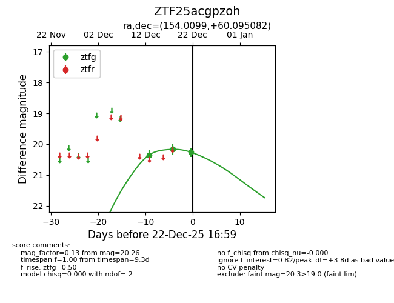
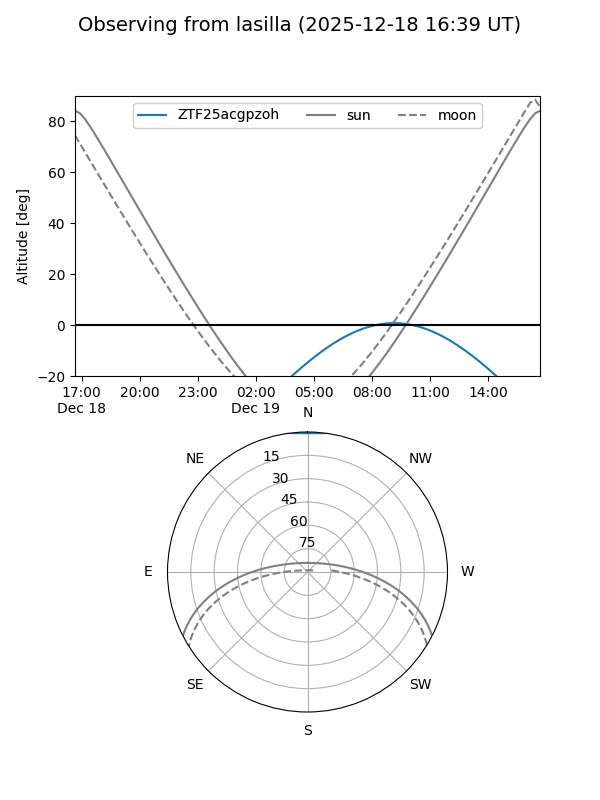
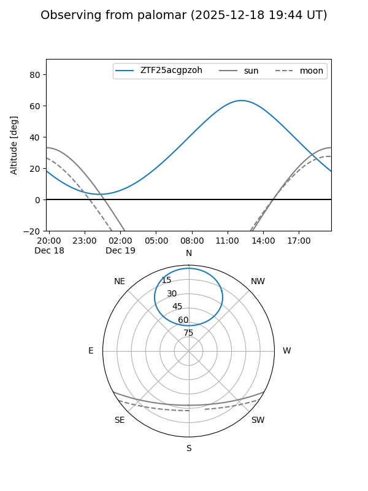
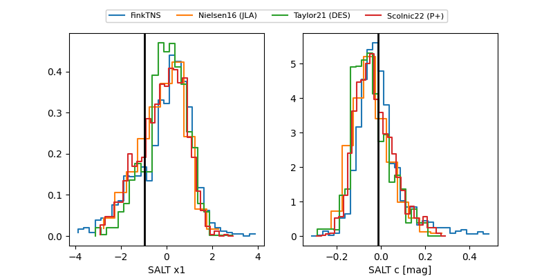

ZTF25acgpzoh
Target ZTF25acgpzoh at 2025-12-23 10:37
Aliases and brokers:
FINK: fink-portal.org/ZTF25acgpzoh
Lasair: lasair-ztf.lsst.ac.uk/objects/ZTF25acgpzoh
ALeRCE: alerce.online/object/ZTF25acgpzoh
alt names
ZTF25acgpzoh (ztf,fink_ztf)
Coordinates:
equatorial (ra, dec) = 154.0099,+60.09508
equatorial (HMS+DMS) = 10:16:02.37,+60:05:42.30
galactic (l, b) = (150.6809,+47.80250)
Flags:
Photometry:
last ztfg=20.26
3 ztfg detections
Lightcurve

Visibility


Additional plots
